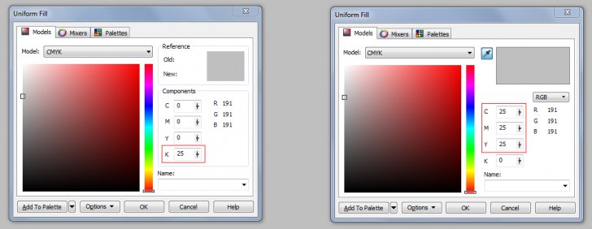
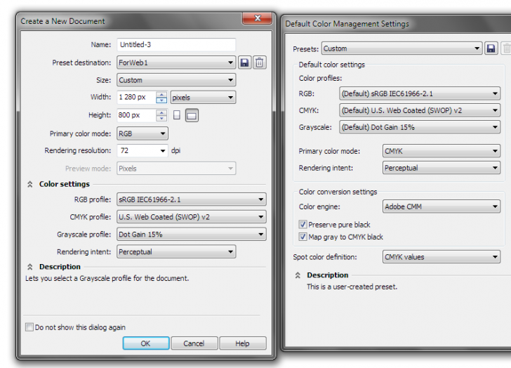
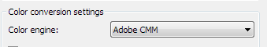

CMS Help?
Des425 / 02.04.2010, 19:11/00:41
Форум:
При конвертации CMYK в RGB не соответствуют данные Х4 с Х5
Перепробовал кучу настроек, не какого толку!
К чему на данный момент пришел!
1. Х4 преобразует цвета правильно, для этого просто сделать пару распечаток и сравнить.
2. Проблема Х5 в том, что при конвертации он заменяет коэффициент CMY на К

На рисунке с лева Х4, с права Х5, в обоях версиях CMS Off
Вопрос к знатокам и к тем, кто уже разобрался:
Как настроить CMS в Х5 версии, чтобы при конвертации, коэффициент CMY на К не заменялся?
Ни чё не понял. CMYK в RGB или RGB в CMYK ?
CMYK в RGB
Пример того что нужно сделать!
Плашка С-100, M-60, Y-0, К-20 нужно перевести в RGB.
В Х4 - получается нормальная темно-синяя плашка! Если поставить две плашки CMYK и RGB рядом, то они не будут отличаться по цвету (чуть-чуть будут, но это не принципиально, так-так на печати это не сказывается)
В Х5 - получается светлая.
Необходимо настроить так, чтоб цвет не искажался!
Так сойдёт? (левый - ргб, правый - смик)
А вот и настройки:

ПС. отключать управление цветом - последнее дело.
Sancho спасибо, походу это сбой был, переустановил COREL все исправилось!
Персахранил файл в Х4, открыл, Magenta отображалась серым цветом. Теперь все нормально. При печати на струйном принтере, я отключаю профиль, чтоб увидеть на мониторе, что выйдет на принтере. (С отключенным профилем, цвета печатаются как на мониторе, без искажений).
Добавлено (02.04.2010, 22:03)
---------------------------------------------
Завтра еще раз проверю все!
Des425, для того что бы печатать на струйнике нужно поиграться с настройками цвета при печати.
Sancho, у меня в стандартных настройках нету Adobe CMM

Только:
None
Mikrosoft CMM
Mikrosoft WCS)
Добавлено (03.04.2010, 16:04)
---------------------------------------------
Его отдельно внедрять надо?
adobe.com там есть. Качай и устанавливай.
Спасибо!